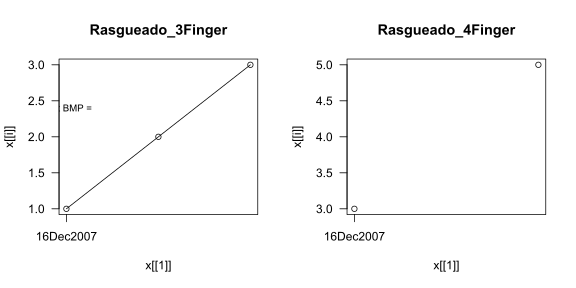

From “Music Theory For Flamenco” by “Flamenco Chuck” Keyser 1998.
Natural scale (without any sharps or flats): C D E F G A B C
| Technique | BMP | Beats | Minutes | Date |
|---|---|---|---|---|
| Picado | 80 | 4 | 1 | 14Dec2017 |
| Tremolo | 80 | 4 | 1 | x |
| Alzapua | 80 | 4 | 1 | x |
| Arpeggio | 80 | 4 | 1 | x |
| Pulgar | 80 | 4 | 1 | x |
| Rasgueado - 3 finger | 80 | 4 | 1 | x |
| Rasgueado - 4 finger | 80 | 4 | 1 | x |

| Lesson | Technique | BMP | Minutes | Date |
|---|---|---|---|---|
| T1 - Sencillos 1 (Tangos) | 1 Finger Rasgueado | 120 | 1 | 14Dec2017 |
| T2 - Estudio por Solea | 3 Finger Rasgueado | 0 | 0 | x |